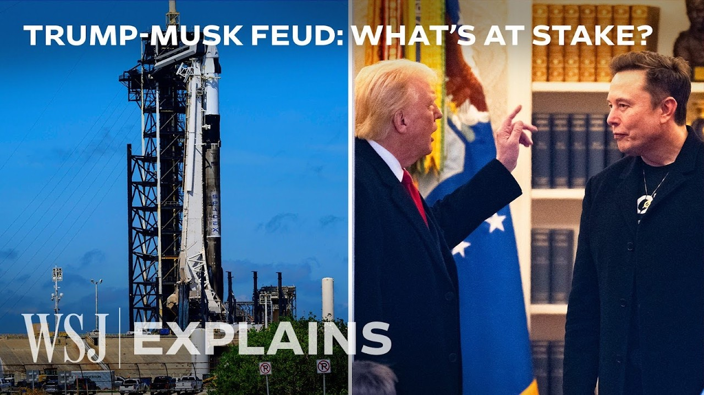

How the Trump-Musk Feud Risks Billions for SpaceX and NASA | WSJ
【特朗普与马斯克之争如何危及SpaceX和NASA的数十亿美元合作 | WSJ】
Summary:
Amid the fallout between Elon Musk and President Donald Trump, SpaceX's Dragon spacecraft faces decommission threats, jeopardizing US space missions and billions in government contracts.
摘要：
在埃隆·马斯克与特朗普总统关系恶化之际，SpaceX的龙飞船面临退役威胁，危及美国太空任务和数十亿美元的政府合同。

⏱️ Estimated Reading Time: 10 min
📚 六级生词
📚 雅思生词
📚 托福生词
📚 GRE生词
📚 视频里的生词
Table of Contents
- 00:00:00 - [Reporter] Amid the fallout between Elon Musk and Presiden
- 00:00:13 - Dragon has been the only US spacecraft launched by a US sp
- 00:00:33 - [Reporter] Musk retracted the threat just hours later. Sti
- 00:00:55 - NASA needs SpaceX, SpaceX needs NASA.
- 00:01:11 - SpaceX has really deep relationships with a lot of governm
- 00:01:27 - We had one launch provider, United Launch Alliance, they w
- 00:02:06 - [Reporter] Since then, NASA has obligated more than 15 bil
- 00:02:36 - When NASA says it's safe to fly on a SpaceX rocket, the wo
- 00:02:55 - The fact that SpaceX was tapped by NASA last summer to bri
- 00:03:33 - That is like a huge ongoing, you know, business and someth
- 00:03:48 - You see sort of Starlink popping up in everything from mil
- 00:04:24 - [Reporter] Starlink is also a big revenue generator for Sp
- 00:04:49 - [Reporter] SpaceX has a number of important future project
- 00:05:11 - [Reporter] It's not just responsible for shuttling people
- 00:05:50 - [Reporter] So with all of this, what does it mean for Spac
- 00:06:08 - [Reporter] NASA experts think that a full breakup is unlik
- 00:06:27 - Ideally, we can take anyone who wants to go to Mars, we ca
- [Reporter] Amid the fallout between Elon Musk and President Donald Trump- - I'm very disappointed in Elon. I've helped Elon a lot.
[记者] 在埃隆·马斯克与特朗普总统关系恶化之际—— “我对埃隆非常失望。我帮了埃隆很多。”
- [Reporter] Musk threatened to decommission SpaceX's Dragon spacecraft. That's a big deal for US space missions.
[记者] 马斯克威胁要让SpaceX的龙飞船退役。这对美国太空任务影响重大。
Back to Top
- Dragon has been the only US spacecraft launched by a US space company transporting astronauts to and from the station from the US.
龙飞船是美国唯一由本土太空公司发射、往返空间站的载人航天器。
- I find this to be disconcerting how quickly this went to the threatening from contracts that's not good for the United States.
“从合同纠纷迅速升级到威胁，这令人不安，对美国不利。”
Back to Top
- [Reporter] Musk retracted the threat just hours later. Still, as the feud continues, SpaceX remains one of the largest financial and logistical vulnerabilities for both Musk and Trump.
[记者] 马斯克几小时后撤回了威胁。但争端持续之际，SpaceX仍是马斯克和特朗普最大的财务与后勤软肋之一。
(upbeat music) Since 2008, the government has awarded SpaceX more than 20 billion in contracts across at least 10 different agencies. Most of it is focused here.
（背景音乐）自2008年以来，美国政府已授予SpaceX超200亿美元合同，涉及至少10个机构，大部分集中于此。
Back to Top
- NASA needs SpaceX, SpaceX needs NASA.
“NASA需要SpaceX，SpaceX也需要NASA。”
- Musk said recently that SpaceX is expected to generate 1.1 billion in revenue this year from NASA. The company is less dependent on government contracts than it was in the past, but still does big business with agencies.
马斯克近期表示，SpaceX今年预计从NASA获得11亿美元收入。虽对政府合同依赖度降低，但仍与机构保持大额合作。
Back to Top
- SpaceX has really deep relationships with a lot of government agencies. Unraveling that would not be easy for either side.
“SpaceX与众多政府机构关系深厚。拆解这种关系对双方都不容易。”
- [Reporter] NASA made a push during the Obama administration to contract with commercial companies. - We wanna leap into the future.
[记者] NASA在奥巴马政府时期推动与商业公司合作。“我们要跃向未来。”
Back to Top
- We had one launch provider, United Launch Alliance, they were the result of a merger of Lockheed and Boeing. When they consolidated, the costs went up and the US lost market share to the rest of the world, namely China, France and Russia. We set up competitions, and SpaceX has been by far the leader in these major competitions.
“我们曾只有联合发射联盟一家供应商，由洛克希德与波音合并而成。垄断后成本上涨，美国市场份额被中法俄等国蚕食。我们引入竞争，而SpaceX一直是这些重大竞赛的领跑者。”
- Elon brought the cost of his Dragon down to under a billion, and then under hundreds of millions. I mean, just the savings are wonderful from a customer perspective because I can now purchase services rather than have to do them all in-house myself.
“埃隆将龙飞船成本压至10亿以下，再到数亿美元。从客户角度看，节省惊人——现在我能购买服务而非全部自主开发。”
Back to Top
- [Reporter] Since then, NASA has obligated more than 15 billion in awards to SpaceX, including 2.9 billion to develop a human landing system as part of the Artemis program. In 2022, NASA said the contract for ferrying astronauts to and from the ISS would total 4.9 billion
[记者] 此后，NASA向SpaceX授予超150亿美元合同，含29亿美元用于开发阿尔忒弥斯计划载人着陆系统。2022年NASA称国际空间站载人运输合同总额达49亿美元。
- Beyond sort of the dollars and cents, as we've been talking about with these astronaut missions, it's SpaceX that has been allowing NASA to do some of its highest-profile operations.
“除了资金问题，正如我们讨论的载人任务，正是SpaceX让NASA得以执行高光任务。”
Back to Top
- When NASA says it's safe to fly on a SpaceX rocket, the world will follow. The governments, industries, anyone will say, "If it's good enough for NASA, it's good enough for us."
“当NASA认证SpaceX火箭安全，全球都会跟进。政府、业界都会说‘NASA认可的，就是我们的选择’。”
- [Reporter] SpaceX recently had to step in when another NASA contractor, Boeing, wasn't able to bring back two astronauts from the ISS.
[记者] 当NASA另一承包商波音未能接回两名宇航员时，SpaceX近期被迫介入。
Back to Top
- The fact that SpaceX was tapped by NASA last summer to bring those two astronauts back to Earth, NASA did not want Boeing to sort of finish that job, shows how comfortable NASA is or has gotten over the years with using SpaceX and the trust that the agency has that the vehicle and the operational side of it works and can be safe. It also very much did highlight the dependence NASA has on SpaceX for this particular operation.
“NASA去年夏天选择SpaceX而非波音接回宇航员，表明多年来NASA对SpaceX的信任——相信其飞船与操作安全可靠。这也凸显NASA对此类任务对SpaceX的依赖。”
- [Reporter] Between Starlink flights and missions for outside customers, SpaceX carried out nearly double the amount of launches than the next three most active companies combined.
[记者] 星链发射与外部客户任务相加，SpaceX发射量超其他三家最活跃公司总和近两倍。
Back to Top
- That is like a huge ongoing, you know, business and something that SpaceX is expected to be doing for years to come.
“这是持续的巨大业务，SpaceX未来多年都将主导。”
- [Reporter] Agencies also contract SpaceXperts' own satellites, it's growing and strategically important Starlink system.
[记者] 机构还签约SpaceX自有的星链卫星系统——这一战略项目正在扩张。
Back to Top
- You see sort of Starlink popping up in everything from military bases or government agencies needing some kind of satellite internet solution.
“星链已渗透从军事基地到政府机构的各类卫星互联网需求场景。”
- [Reporter] One of the most notable contracts is one to provide Starlink to Ukraine.
[记者] 最引人注目的合同之一是为乌克兰提供星链服务。
- A lot of military officials who are thinking about the future of war have been obsessed and really interested in how the Ukrainians have used Starlink. That experience in that conflict zone has created just a lot of awareness at the Pentagon, and frankly, in governments around the world about the need for fast, reliable, secure communications in conflict areas.
“许多思考未来战争的军官痴迷于乌克兰对星链的运用。这一战区经验让五角大楼乃至全球政府意识到冲突地区对快速可靠通信的需求。”
Back to Top
- [Reporter] Starlink is also a big revenue generator for SpaceX outside of the government. Quilty Space, a consulting firm, estimated that Starlink revenue is set to grow to 12.3 billion this year.
[记者] 星链也是SpaceX在政府合同外的重要收入源。咨询公司Quilty Space预估星链今年收入将达123亿美元。
- Starlink has provided a very significant revenue source for SpaceX that isn't dependent on government contracts and the budget cycles in Washington and all the rest.
“星链为SpaceX提供了不依赖政府合同与华盛顿预算周期的重要收入。”
Back to Top
- [Reporter] SpaceX has a number of important future projects with the US government lined up.
[记者] SpaceX与美国政府有多项重要未来项目。
- SpaceX, because they've been successful, have been built into the ecosystem and the architectures of future missions for both NASA and also the Department of Defense and other Spacefaring agencies. So a lot of the US government is dependent upon SpaceX for their very good vehicles.
“SpaceX因成功已融入NASA、国防部等机构的未来任务生态。美国政府多部门依赖其优质运载工具。”
Back to Top
- [Reporter] It's not just responsible for shuttling people and supplies to the ISS, it was also selected to deorbit the station at the end of its operational life in 2030. And in April, 2025, the company was awarded almost $6 billion from the Department of Defense for future satellite launches. SpaceX also submitted a proposal for Trump's Golden Dome, a missile defense shield that combines ground-based interceptors with satellites.
[记者] SpaceX不仅承担国际空间站人员物资运输，还被选中在2030年空间站退役时执行离轨任务。2025年4月，该公司获国防部近60亿美元未来卫星发射合同，还提交了特朗普“金穹”导弹防御系统方案——结合地基拦截器与卫星。
- A lot of people I've talked to believe that SpaceX will have to be involved one way or the other in that because it has the most launch capacity, and of course, it's also developing a huge new vehicle that could potentially be involved in the future.
“许多受访者认为SpaceX必将参与该项目，因其拥有最强发射能力，且正在开发可能适用的新型运载器。”
Back to Top
- [Reporter] So with all of this, what does it mean for SpaceX and NASA in Musk and Trump's potential divorce?
[记者] 那么，马斯克与特朗普潜在决裂对SpaceX与NASA意味着什么？
- Getting more competition is probably the biggest answer. Elon himself says he wants competition. Unfortunately, SpaceX is so far ahead in so many areas, that will take years.
“引入更多竞争或是关键。马斯克本人也呼吁竞争。但SpaceX在多个领域领先太多，追赶需时数年。”
Back to Top
- [Reporter] NASA experts think that a full breakup is unlikely.
[记者] NASA专家认为彻底分裂可能性低。
- SpaceX, Elon have every incentive to do this work. It all supports what his long-term vision is, as stated to colonize Mars and make life interplanetary, make humanity interplanetary.
“SpaceX与埃隆有充分动力继续合作。这符合其殖民火星、实现星际生存的长期愿景。”
Back to Top
- Ideally, we can take anyone who wants to go to Mars, we can take to Mars.
“理想情况下，我们能送所有想去火星的人前往火星。”
- [Reporter] A NASA spokesperson said in a statement that NASA will continue to execute upon the President's vision for the future of space, and that they will continue to work with industry partners to ensure the president's objectives in space are met. (pensive music)
[记者] NASA发言人声明称将继续执行总统的太空愿景，并与行业伙伴合作确保实现总统的太空目标。（沉思音乐）
Back to Top